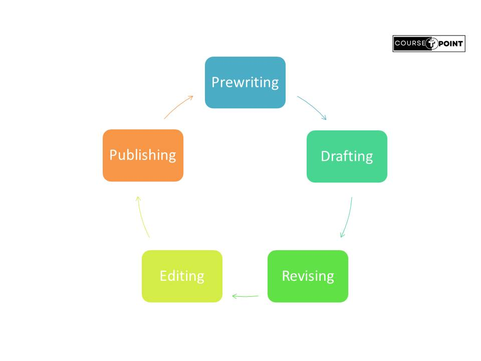

Written Communication
| Table Of Content | |
|---|---|
Written Communication
Written Communication involves any type of message that makes use of the written words. Written communication is the most important and the most effective mode of any mode of business Communication.
Written communication is used for many purpose. The Communication which take place through written
words
for example Application, notice,memo, circular etc.
Althrough the telephone overcomes the
problems
of distance between the two, it is not necessary to incur the expense of a telephone call unless the
matter is urgent.
Besides, many types of documents are required for official work and for
records.
Letter, Circular, memos, notices, report, minutes are constantly prepared and exchanged in and
between
organization. Each has a format layout which is fixed by custom.
Importance of written communication
- It different From Oral Communication.
- The clear expressions of ideas.
- Grammer plays a huge part.
- Logical Organization.
- Clear flow of ideas.
Advantages
- Easy to preserve
- Easy presentation to complex matters
- permantent records
- prevention of wastages of time and money
- Delegation of authority
- Effective Communication
- Proper Information
Disadvantages
- Expensive
- Time Consuming
- Complex Words
- Useless for illiterate persons
- Delay in response and decision making
Types of Written Communication

C's of Effective Written Communication
The qualities which are essential for letter or a good written communication are correctively called C's of Effective Communication.
- Correctness:
- In spelling, grammer and use of Language.
- In appearance and form of layout.
- In the information, it conveys.
- In tone formality and style.
- Clarity:
- Simple(Easy and Every day Words).
- Short and Simple Sentence.
- Proper Punctuation.
- Given deffinate and concrete detail.
- Conciseness
- Leaving out unnecessary Content.
- Reducing less important ideas to phrases or single words.
- Making sure that only the necessary and relevant details are Included.
- Courtesy:
- Use of Courtesy words like thank you, please, and sorry.
- Express appropriate feelings according to situation.
- Make the other person feel comfortable.
- Be attentive and prompt in responding.
- Let the tone, choose of words, and the style of message reflect consideration for the feeling and needs of the readers.
- Completeness:
- The message you send the person or audience should be complete.
- Clearly define the purpose or objective of the communication.
- Include all relevant facts, details, data, or context that are necessary for understanding the message.
- Provide opportunities for feedback or clarification to ensure that the recipient has understood the message correctly.
Process of Written Communication
- Pre-Writing: Clarify the purpose of the written communication and identify the target audience. Understand what information needs to be conveyed and who will be receiving the message.
- Drafting: Write the first draft of the communication based on the outline or structure.
- Revising: Review and revise the draft for clarity, coherence, accuracy, and effectiveness.
- Editing: Edit the content for grammar, spelling, punctuation, and formatting errors. Consider feedback from others or seek input to improve the quality of the written communication.
- Publishing: final stage where the written content is made available to the public or a specific audience through various channels.
Business Letter
Letter are the chief means of keeping oneself in touch with those seperated by the distance. Letter maintained their important till date as they were centuries were. Letters can be broadly categorised into Personal letter-Which exchanged between two or more persons sharing personal Information and Business Letter- Which is used to communicate business information.
Letter which are used during a business transaction is called Business Letter. As a part of routine work, letters are exchanged during the day and every time is neseccary that the sender and the receiver even known each other. Business Letter are life-line of trade in their era.
Types of Business Letters

Format of writing a business letter
- The Head Address: This is the name and address of sender. Usually is place is at top center or to the right of the sheet of paper. The Head address , besides giving the detail name and address of the company, also gives a short description of the business it deals in, and include telephone number.
- Date: Every Official documents must be dated. The date should always written with the name of the month and not the number of the month e.g 10th March 2023 Or March 10,2023.
- Reference Number: This is usually written in the left of the paper, In the same line as the date. It indicates the file number, the department to which the file has to go, the number of the letter and the year. The reference number makes it very easy to the file the letter and also to get a reference of it, when necessary. It is usually written as: Ref.No, Your Reference No.
- The Inside Address : Inside address is the name an address of the receiver as it appears on the envelope. The recipents name should be exactly as they sign it in their letter.
- Salutation: It is greeting to the receiver of the letter and commonest from used are Respected sir and Respected Madam, makes the letter very formal this is the salutation which is preferred.
- The Caption line:It is usually placed below the salutation. It gives in a nutshell what is contained the main communication of the letter.
- Body of a Letter: It is most important part. It is usually broken up into three
essential parts:
- The Opening or the introductory paragraph which is short, to the point and one which should immediately attention of the reader.
- The main communication to be made, which may be subdivided into many paragraphs.
- The Closing paragraph, which is again short and something of a formality.
- The Complimentary Close: It is a form of saying goodbye. It comes to the right or left below the body of the letter. The Commonest complimentary close is 'Yours faithfully' but, in general the complimentary close has to agree in tone with the salutation.
- The Signature: It should be written in hand. It is usually the initials and surname of the signatory. 'Mr.' and 'Mrs.' are not written before the signature.
[Your Name]
[Your Title]
[Your Company/Organization]
[Your Address]
[City, State, Zip Code]
[Your Phone Number]
[Your Email Address]
[Date]
[Recipient's Name]
[Recipient's Title]
[Company/Organization Name]
[Address]
[City, State, Zip Code]
Dear Mr./Ms. [Last Name],
[Body of the letter goes here. Be concise, clear, and professional. State the purpose of the
letter
and provide necessary details, information, or explanations.]
[Complimentary Close],
Sincerely,
[Your Typed Name]
[Your Title, if applicable]
JOB Application
A job application is a formal document submitted by an individual to apply for a specific job position within an organization. It typically includes information about the applicant's qualifications, skills, experience, and interest in the job. Here's a standard format for a job application:
- Address of the Appicant: Address of the Applicant who apply for job.
- Date of Application: Date (written out in full, e.g., January 1, 2024)
- Name and Address of Recipient.
- Salutation
- introductory paragraph: It is drafted according as it is a solicited application or the unsolicited one in the application is against an advertisement or otherwise. whatever the circumstances may be, it should be expressed simply and directly.
- The detail of the Applicant: Bio-data or resume is most important document in the
job
getting process.It is the first introduction of the candidate to the employer. Usually the
information is classified under four headings :
- Personal detail: This includes basic personal details such as the applicant's name, address, phone number, and email address. Providing accurate and up-to-date contact information is essential for employers to reach out to the applicant.
- Education: Provide details of your educational background, including degrees earned, institutions attended, majors or areas of study, and graduation dates. Highlight any relevant coursework, certifications, or training programs that are applicable to the job.
- Work Experience: Outline your relevant work experience, including previous job titles, company names, dates of employment, and key responsibilities or achievements.
- Reference: Some job applications may require you to provide references who can vouch for your character, work ethic, and qualifications. Include contact information for professional references who can speak to your abilities and suitability for the job.
- The Concluding paragraph: Can provide same interesting information about the applicant. for example: hobbies.
- Complementary close
- Signature box: Your handwritten signature (if sending a physical letter).
[Address of Applicant]
[Your Name]
[Full address of employee to be]
[Recipient's Name]
[Recipient's Title]
[Company/Organization Name]
[Address]
[City, State, Zip Code]
[Subject : ........................]
Dear Mr./Ms. [Last Name],
[I Would be Honoured if an considered for the position of secretary as advertised by you in
....dated...]
[My personal detail are :]
- Name : .......
- Date of Birth : .......
- Nationality : ........
- Gender : .........
[After completing my education I took up my first appointment in the year Designation at the name of the organization.........]
[Complimentary Close],
Sincerely,
[Your Typed Name]
Memorandum
"Memo" is derived from the latin word "memorare", changed to "memorandus" which means "to provide Information". Thus, a 'memo' is a written statement that provides information by a person or a committee of persons to other persons.
In the present business environment the business activities have make an extensive spread without considering a boundary for the information Interchange. There becomes the necessity of having certain tools which could help the effective interchange of the Information. Memo, which is abbrevation of the word 'memorandum', forms part of inter and intra-departmental correspondence and used in an extensive way.
NAME OF COMPANY
INTER-OFFICE MEMORANDUM
Date: ...............
Ref: .................
To: ..................
From: ................
Subject: ...........
...................................................................................................
.......................................................................................................
SIGNATURE
cc.
Components of Memorandum
- Heading: Heading of the memo random has an important place in entire memo format. This would include reference to the sender and receiver. Normally, the official designation is used to address and to indicate the addresser.
- Reference, subject and date: The reference number for a memo should always be given. It helps in filling and recording of document, for cross-referencing became easy. full date are important from the point of view of future reference.
- Body: The body of the memorandum is where the main message or information is presented. It typically consists of one or more paragraphs that convey the details, announcements, instructions, decisions, or updates being communicated. The body should be concise, clear, and focused on the key points of the memo.
- Signature: In some cases, the sender of the memorandum may include their handwritten or electronic signature at the end of the memo to authenticate the communication.
Example:
Office Order
The word 'Order' gives entire meaning. It is a downward communiation i.e, from superior authority to people below. The message is an order and hence has to be compiled with, whereas these are not essentially the attribute of a memorandum. Since thse message are to be compiled with hence it should be made absolutely clear to whom they are addressed to.
The Example of format of an office order are below: